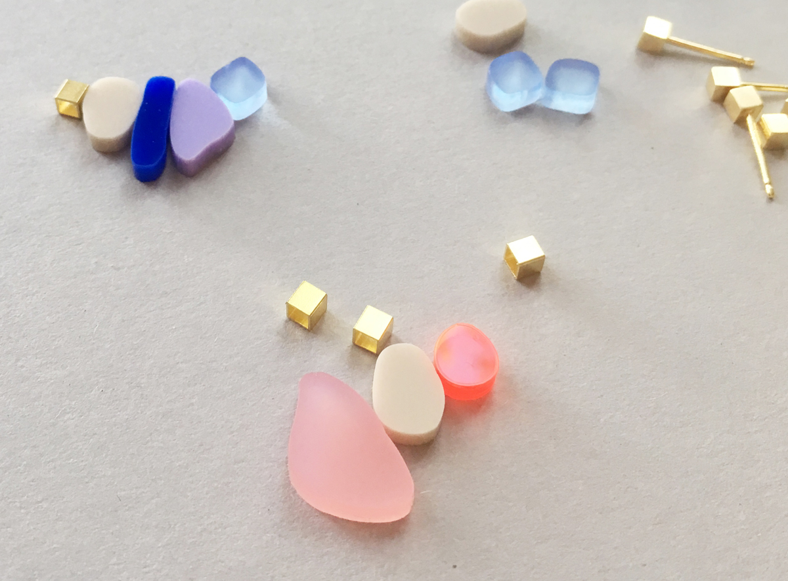

BLOG
Nothing as calming as these tiny, soft formed stones you find along the river or the seaside. With their surprising colours and gentle round- ings they always invite to collect and arrange them. So we did. Threaded or stacked you can wear our Pebbles and remember these special moments of calm.
Necklace from gold-plated brass with a pendant from acrylic glass a gold-plated brass cube.
Pendant: acrylic glass, gold-plated brass
Chain: ca 50/55 cm, gold-plated brass
Please note: Given these are all handmade the actual product may slightly differ from this picture.